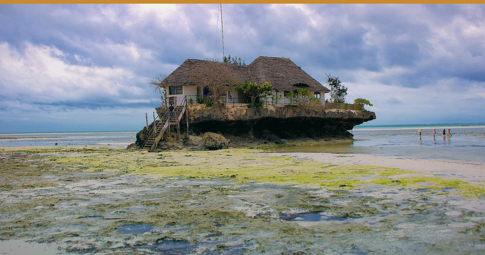

Photo: Rod Waddington · Wikimedia Commons · CC BY-SA 2.0
← All editionsStanding brief: nothing new cleared the recency gate since the Midday Pulse.
Standing brief: nothing new cleared the recency gate since the Midday Pulse. So tonight we do the more useful thing — audit the story everyone thinks they're reading.
━━━━━━━━━
1️⃣ THE "JULY 2026" KENYA ADVISORY IS STILL MARCH 2025 — AND NOW THE PRESS IS RECYCLING IT
At 19:00 EAT tonight, the US State Department's rendered Kenya advisory page still reads "Travel Advisory March 17, 2025", and Eastleigh and Kibera are still Level 3 "Reconsider Travel" — not "Do Not Travel". The page did not move all day. Meanwhile Citizen Digital's advisory story, published 18 March 2025, now carries a modified date of 2 August 2026 and is resurfacing as if it were fresh news.
🎯 So what: Do not let a phantom July escalation trigger a discount. Kenya is Level 2, unchanged for 16 months. Brief your agents that nothing has actually changed.
🏷 City/Bush/Beach | 🇰🇪 | Confirmed
2️⃣ THE ADVISORY BOARD IS UNCHANGED — WHICH IS ITSELF THE SIGNAL
Verified 2 Aug: Kenya L2/L2 (US/UK), Uganda L4/L3, Tanzania & Zanzibar L2/L1, Rwanda L3/L2. Not one level moved this week.
🎯 So what: A confirmed "no change" is a licence to hold rate. Tanzania and Zanzibar still carry the region's cleanest advisory profile — price it.
🏷 All | 🇰🇪 🇹🇿 🇺🇬 🇷🇼 | Confirmed
3️⃣ TANZANIA IS QUIETLY HARDENING ITS OUTBREAK DEFENCES
Tanzania's Health Ministry is revising its National Viral Haemorrhagic Fever guidelines — last updated in 2019 and Ebola-only — to cover both Ebola and Marburg (Daily News, 28 July), and ran a preparedness drill at Lawate Health Centre, Kilimanjaro, on 1 August. DRC's Bundibugyo outbreak continues; Uganda declared its own over on 28 July but still sits at US Level 4.
🎯 So what: Tanzania's zero-case, actively-preparing posture is a positioning asset versus Uganda's Level 4 — but keep pre-arrival health comms factual, never alarmist.
🏷 Bush/Beach | 🇹🇿 | Reported
━━━━━━━━━
• EPRA fuel review ~14–15 Aug — Nairobi diesel held at KSh 222.86/L only by the levy + 8% VAT running to 14 Oct.
• CDC Ebola entry order decision point — 12 Aug.
• KNBS July CPI — due end-month; Kenya ran 6.4% in June.
🔗 This edition on the web: https://eahospitalitypulse.com/editions/pulse-2026-08-02-evening.html
💼 Today's Big Read on LinkedIn: https://www.linkedin.com/company/ea-hospitality-pulse/
— EA Hospitality Pulse | Daily intelligence for city, bush & beach properties
📣 Telegram (full editions) 💬 WhatsApp (daily skim) 💼 LinkedIn (the Big Read) 🗂 Every edition